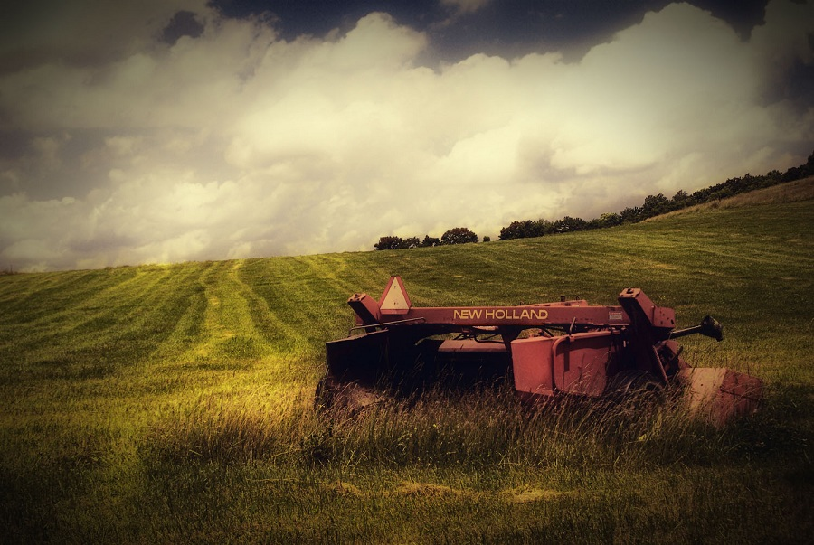
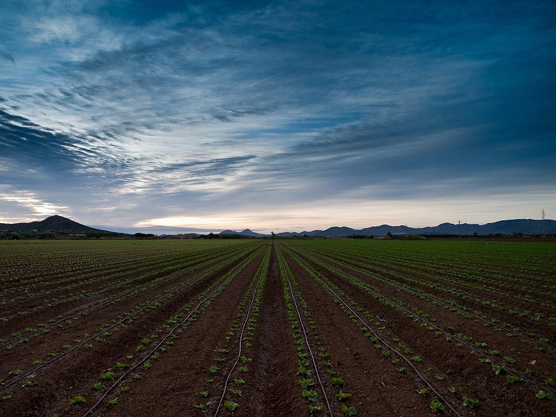

Ramuri ale agriculturii
Termenul de agricultură provine din cuvintele din latină agri desemnând câmp și cultura însemnând

cultivare, în sensul de prelucrare mecanică și chimică a solului pentru a fi apt pentru cultivarea plantelor. În termenul generic de agricultură se regăsesc științe și ocupații distincte, așa cum sunt:
Există și o mulțime de ramuri strict specializate ale agriculturii care au ca scop esențial producerea

hranei și îmbrăcăminții sau petrecerea timpului liber al oamenilor și a viețuitoarelor de pe lângă aceștia.
Întrucât agricultura este una dintre cele mai vechi ocupații ale omenirii, fiind intrinsec legată de viața sedentară, de când oamenii, din nomazi (axându-se pe vânătoare, pescuit și culegerea produselor vegetale), au devenit cultivatori de plante și crescători de animale, continua sa îmbunătățire și rafinare a fost unul din factorii esențiali ai progresului generalizat. Astăzi există oameni de știință îngust specializați, inventatori, biologi moleculari, geneticieni, biochimiști, biofizicieni, ingineri mecanici, chimici, electrici și electroniști a căror unică preocupare este îmbunătățirea productivității și eficienței metodelor de creștere a plantelor și animalelor și a folosirii resurselor existente. Toți aceștia sunt "ocupați în agricultură".
Se consideră (conform unei estimări din anul 2002) că 42% din populația globului se ocupă cu agricultura, făcând-o de departe cea mai răspândită ocupație umană. Din păcate, produsele agricole contează doar ca 4.4% (estimare din 2005) din produsul brut mondial, care este calculat prin adiționarea tuturor produselor brute interne ale tuturor țărilor.